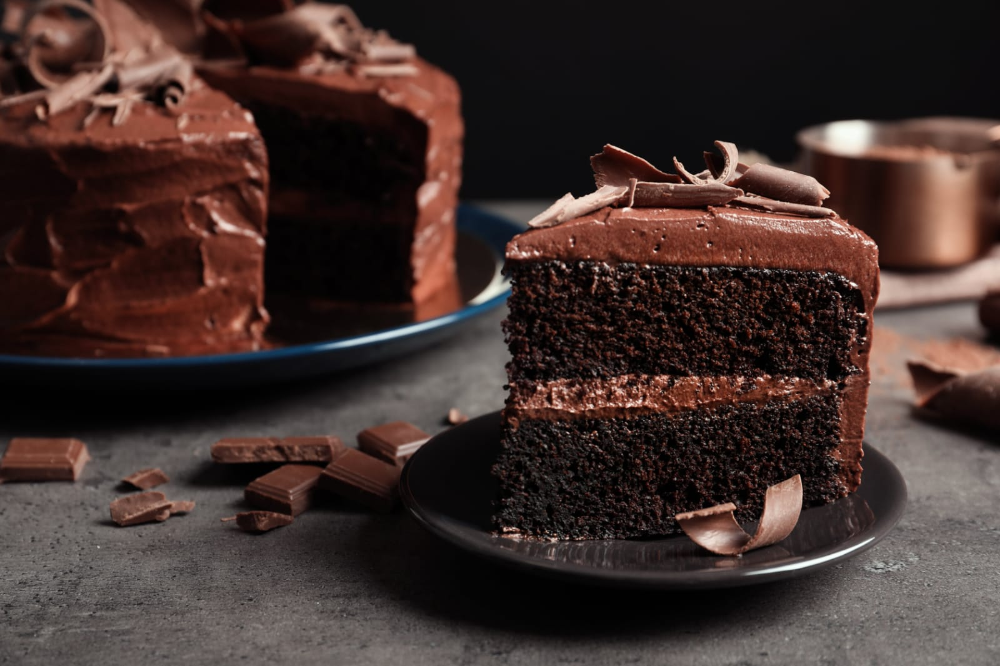

Torta de chocolate
“Nada une más a una familia que el olor de una receta casera en la cocina.”
Ingredientes
- 1 y 1/2 tazas de harina de trigo
- 1 taza de azúcar
- 1/2 taza de cacao en polvo sin azúcar
- 1 cucharadita de polvo de hornear
- 1 cucharadita de bicarbonato de sodio
- 1/2 cucharadita de sal
- 2 huevos
- 1 taza de leche
- 1/2 taza de aceite vegetal
- 2 cucharaditas de extracto de vainilla
- 1 taza de agua caliente
Preparación:
- Precalienta el horno a 180 °C y engrasa un molde.
- Mezcla los ingredientes secos.
- Agrega huevos, leche, aceite y vainilla. Bate bien.
- Añade poco a poco el agua caliente.
- Hornea 35-40 minutos.
